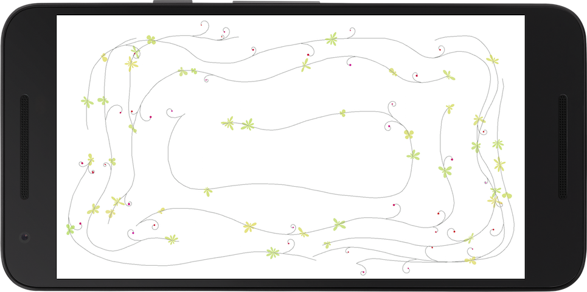
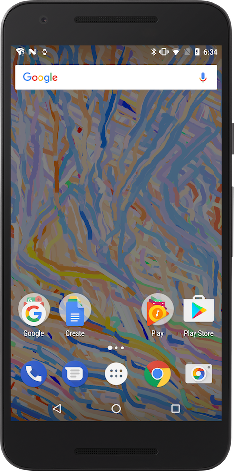
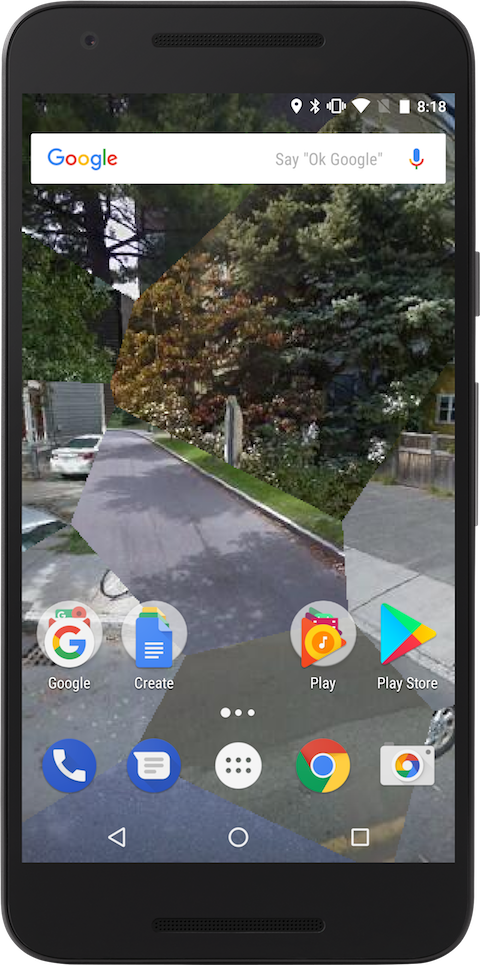
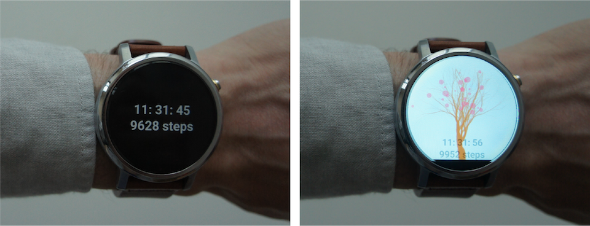
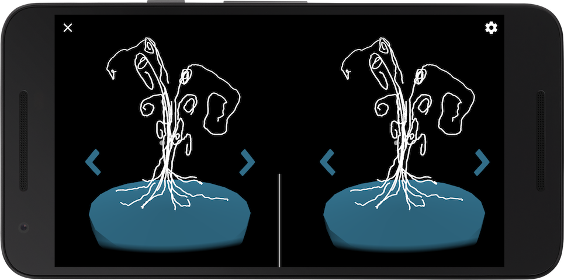

Each section in the book covers a specific topic: first steps with the Android mmode, drawing and interaction, sensors, watch faces, and VR. The first two chapters in each section provide many short code examples demonstrating the techniques presented in the text, while the last chapter goes applies all these techniques in a final project that is more elaborate in its concept and implementation. The five final projects in the book are available at the Google Play Store as apps you can install and try out on your device.
Vines Draw
A simple drawing app that adds some randomly generated vegetation, so that the resulting drawing looks a little bit like a vine. Source code.

Image Flow
This live wallpaper uses the photos stored in the device's gallery to drive a particle system that follows the photos' patterns of light and shadow. Source code.

Street Collage
Another live wallpaper that gets the Google Street Views from the recent visited locations, and generates a collage from these viewa using Voroni tessellation. Source code.

Running Tree
A watch face that grows a tree as the step count increases. The tree blooms when the count approaches 10,000 steps. Source code.

VR Draw
This VR app for Cardboard or Daydream allows its users to make drawings in VR using their gaze, and then to fly through them. Source code.
